Can Limoncello in Ibiza
Instagram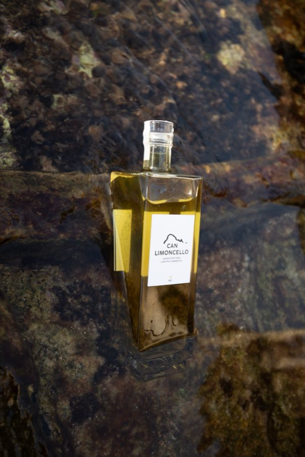
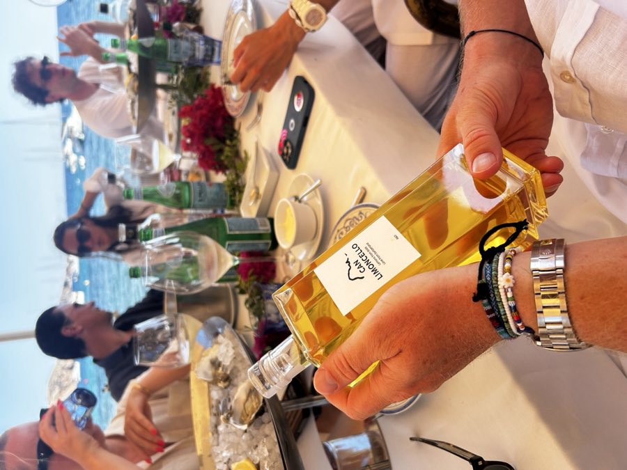
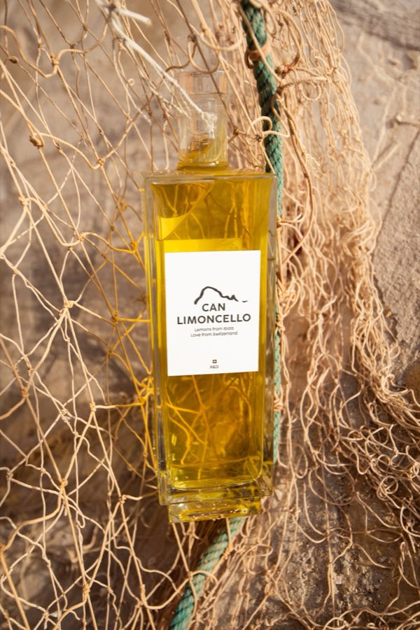
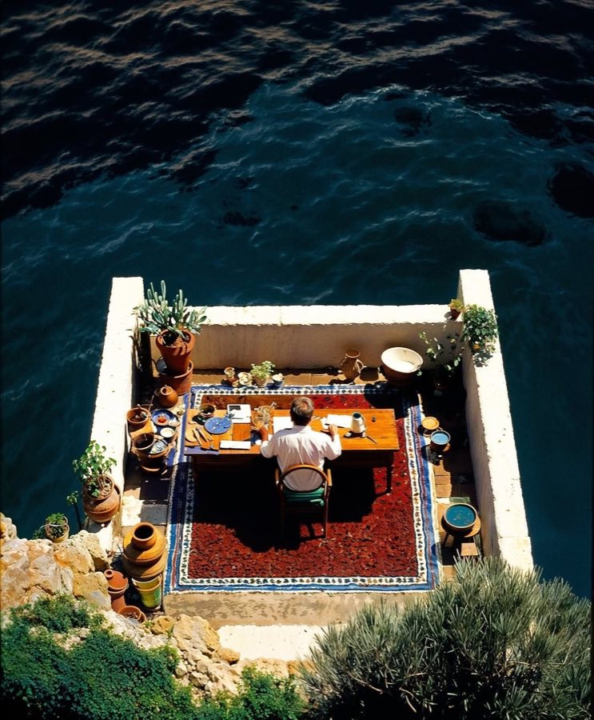
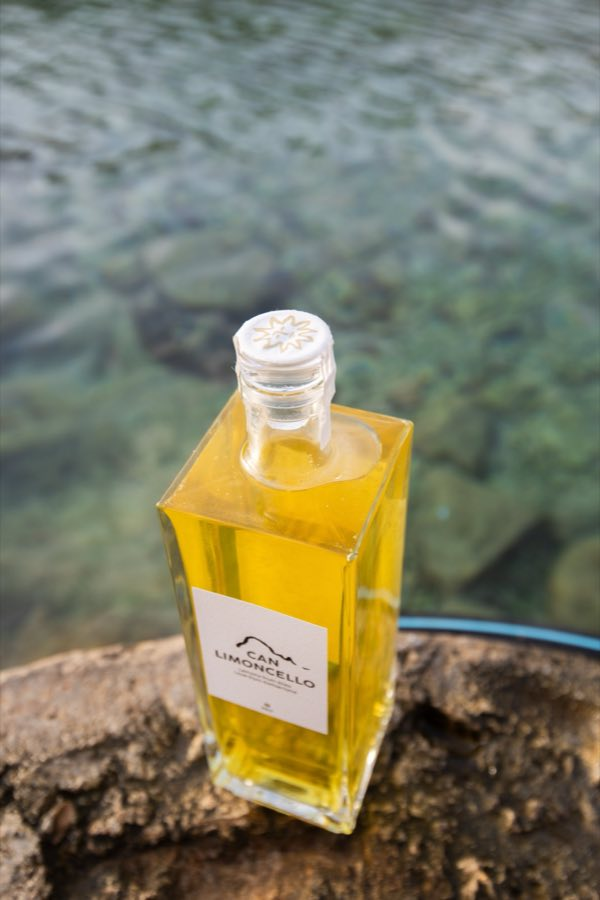
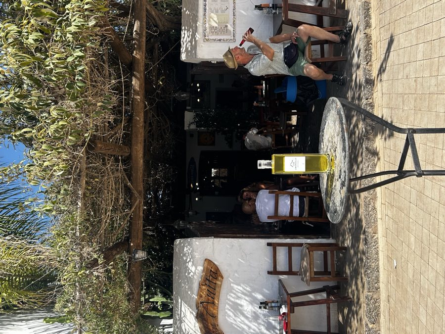
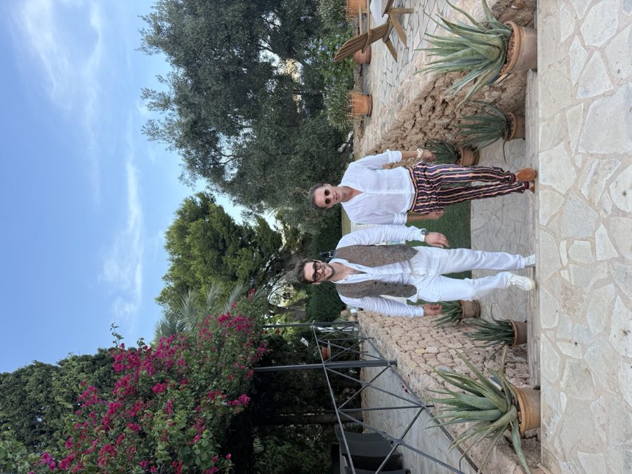
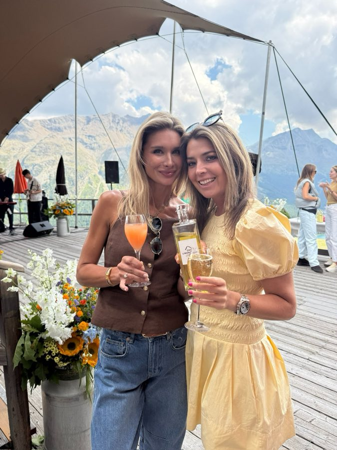
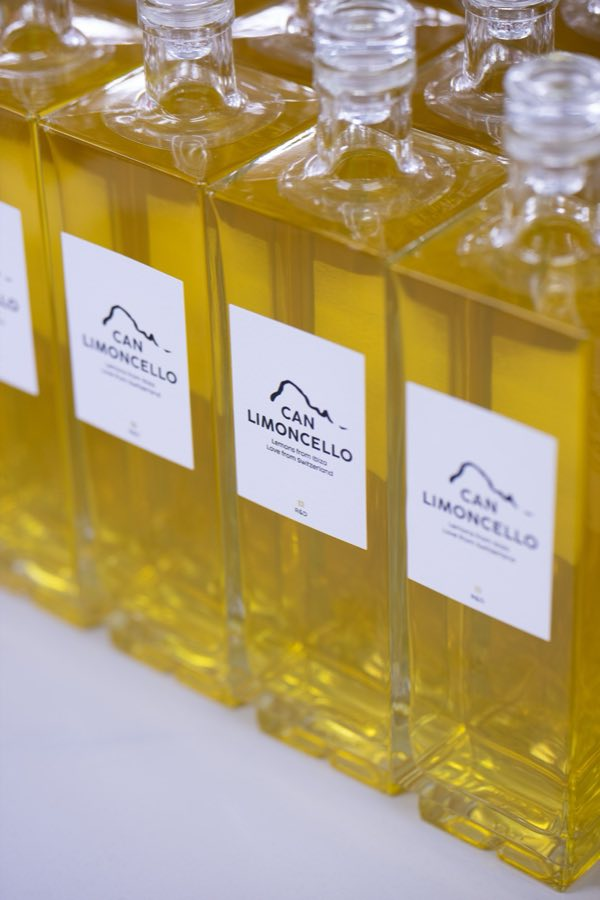
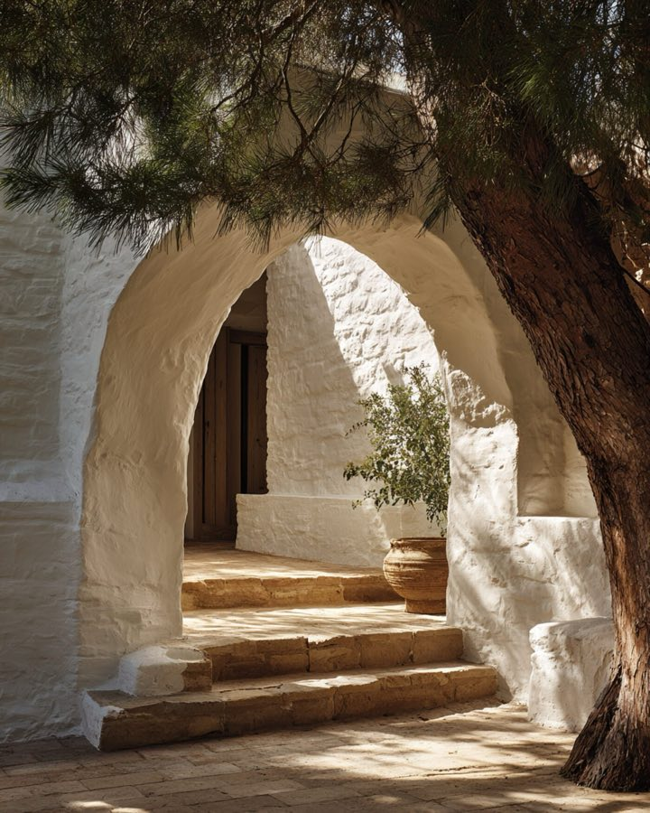
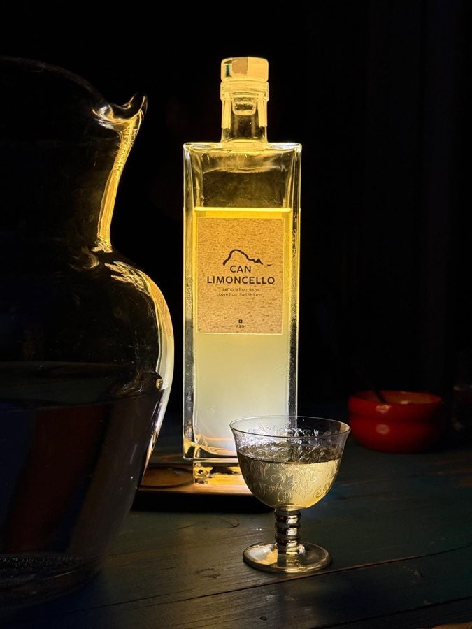

Ready to belong?
Can
Limoncello
Our story
The Island
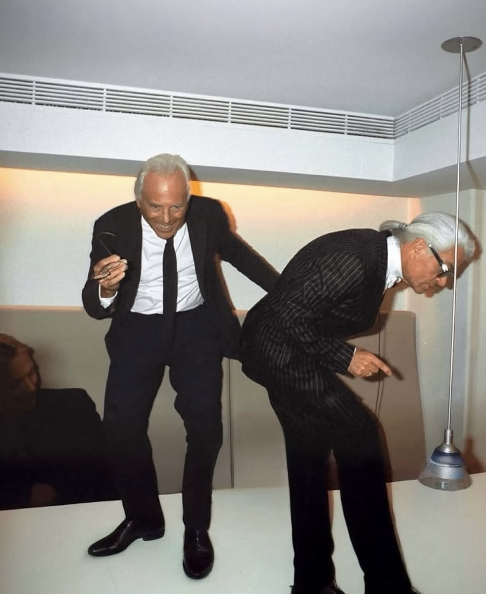
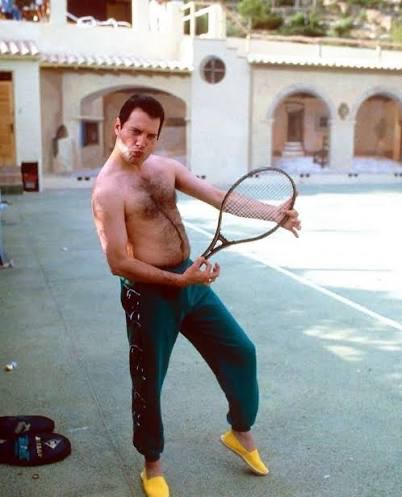
For decades, Ibiza has drawn legends from all over the world — artists, designers and free spirits who came to live freely and with passion. Can Limoncello's creative ambition is to capture that magic in a bottle.
Es VedràTake a sip, close your eyes, and let Ibiza find you.
From the farm to the bottle
Our lemons grow on a farm in San Lorenzo, in the quiet green heart of Ibiza, ripening slowly under the island sun. In Switzerland, their peels are cut and prepared by hand and given time to rest until the limoncello reaches its golden balance — patient, precise and made with Swiss care.
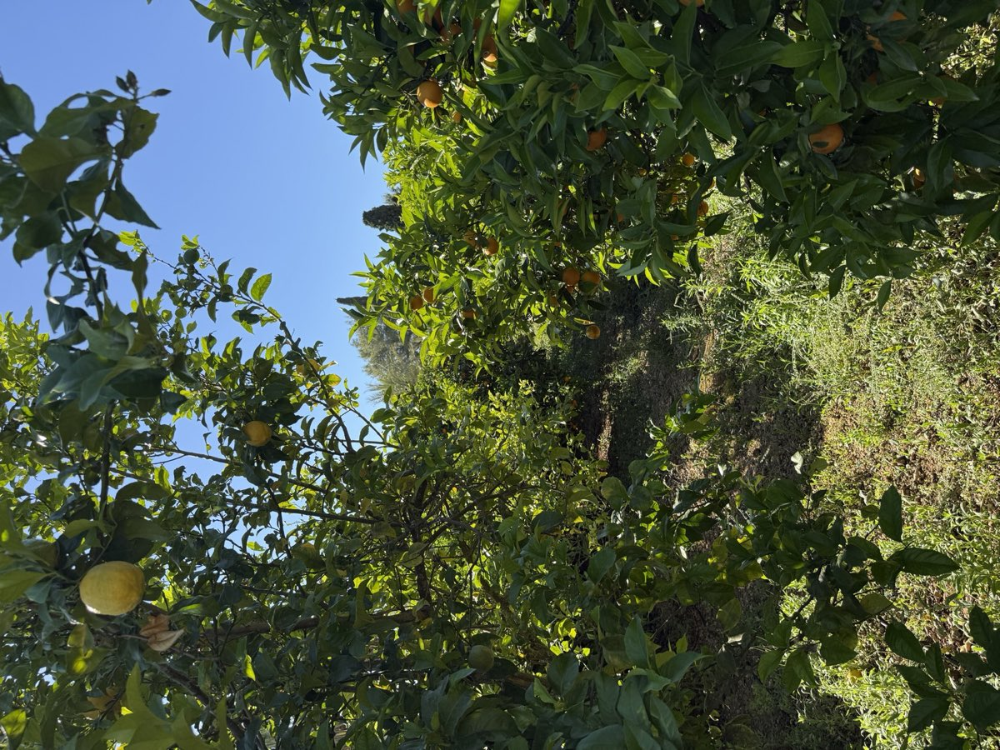
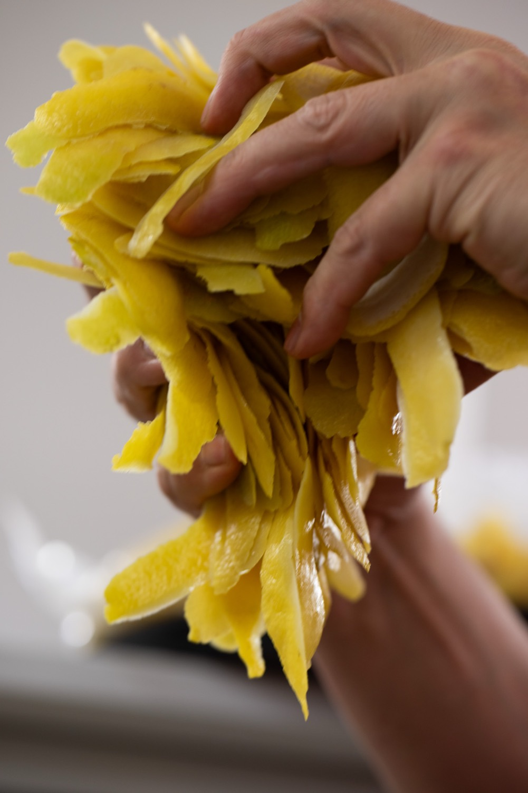
Can Limoncello in Ibiza
Instagram









